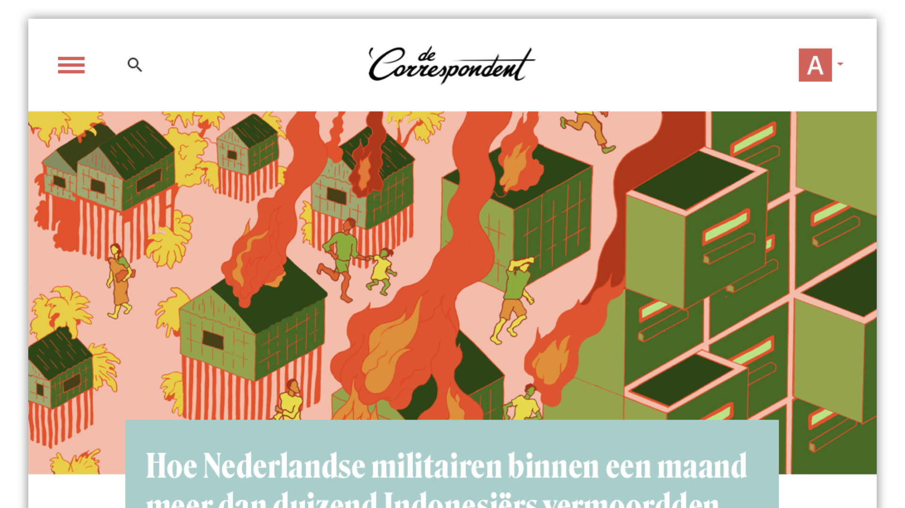
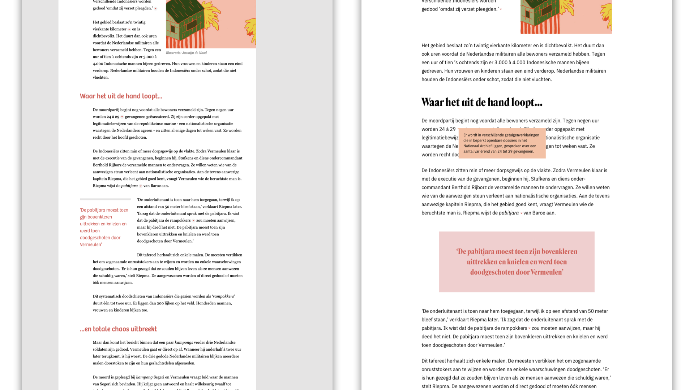

De Correspondent is an online journalistic platform, providing members with in-depth articles. I like reading their articles and I was wondering if I could come up with a different design for their articles, as a design challenge of sorts.
Although I think the articles on De Correspondent are great in terms of legibility, I tried to find another font combination that added something more funky and editorial. I chose Roslindale for titles and headings, and the sublime IBM Plex for the body text.
In the current site, the body text is placed on a white background, which is in turn placed on a grey background. This, to me, was a bit of a distraction. I placed the text on a fully white background, using quotes from the original article to break the length of the article.
Each article comes with some 'metadata' about the article. This includes the date of the article, reading time and the option to save the article for a later time. In the current website, this information is kind of scattered. I decided to place this information in a single, clear element.
The end result is an experiment i'm quite happy with. It served as a great excercise in typography, shapes and information hierarchy.